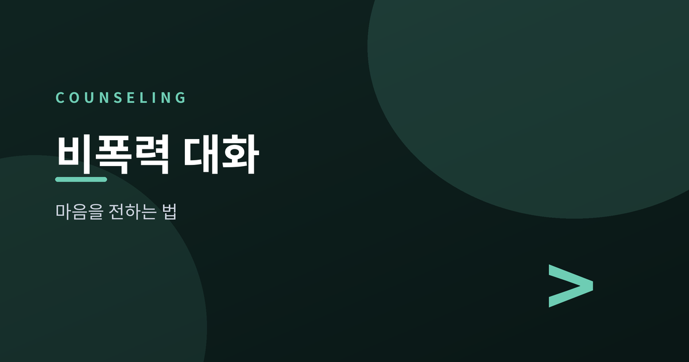
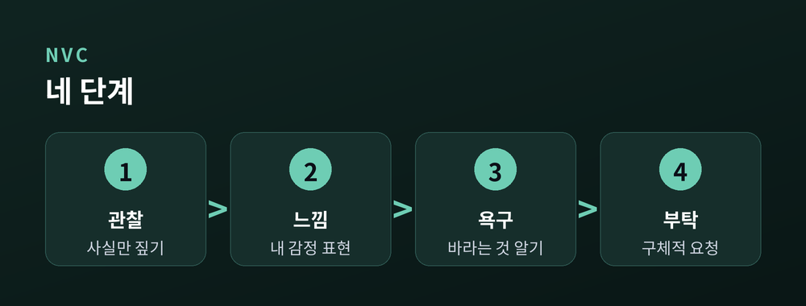
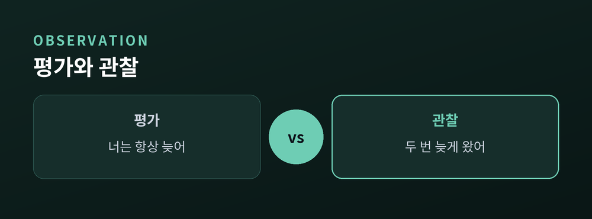
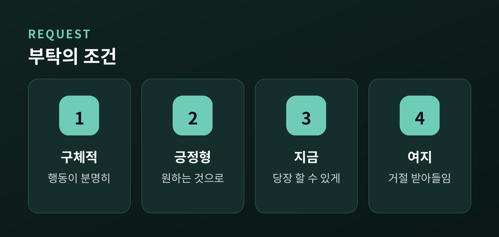

비난 없이 마음을 전하는 네 단계

이번 글에서는 마셜 로젠버그의 비폭력 대화(NVC)를 정리해 보겠습니다.
같은 말을 해도 어떤 표현은 상대의 마음을 닫게 하고, 어떤 표현은 마음을 열게 합니다. 그 차이는 대개 "비난"이 섞였느냐에 달려 있습니다.
비폭력 대화는 서로를 탓하지 않으면서도 내 마음을 분명히 전하는 방법입니다. 어렵지 않으니 하나씩 짚어 보겠습니다.
비폭력 대화는 연결을 위한 말하기입니다. 상대를 이기거나 굴복시키는 대화가 아니라, 서로의 마음을 이해하려는 대화입니다.
핵심은 네 단계입니다. 관찰, 느낌, 욕구, 부탁의 순서로 마음을 전합니다.
이 네 걸음을 따라가면, 화가 난 순간에도 비난 대신 내 마음을 담아 말할 수 있습니다. 상대도 방어할 필요가 없으니 귀를 열게 됩니다.

첫 단추는 관찰입니다. 여기서 가장 흔한 실수가 관찰에 평가를 섞는 것입니다.
"너는 항상 늦어"는 관찰이 아니라 평가입니다. "항상"이라는 단정이 상대를 몰아세웁니다. 관찰은 카메라가 찍듯 사실만 담습니다. "이번 주에 약속 시간보다 두 번 늦게 왔어"가 관찰입니다.
평가로 시작하면 상대는 곧바로 반박할 거리를 찾습니다. 사실만 짚으면, 대화는 다툼이 아니라 확인에서 출발합니다.
관찰은 판단을 잠시 내려놓고, 일어난 일 그 자체를 보는 일입니다.

관찰 다음은 느낌과 욕구입니다. 이때 필요한 것이 "나 전달법"입니다.
"너 때문에 화가 나"는 너를 주어로 삼아 상대를 탓합니다. "나 전달법"은 나를 주어로 삼습니다. "나는 걱정이 됐어. 우리 약속이 지켜지길 바라거든." 여기엔 느낌(걱정)과 그 밑의 욕구(신뢰)가 함께 담깁니다.
느낌은 옳고 그름이 없습니다. 그래서 반박당하지 않습니다. 그리고 모든 느낌 아래에는 채워지길 바라는 욕구가 있습니다. 그 욕구를 알아차려 말로 옮기면, 상대는 나를 공격 대상이 아니라 이해할 사람으로 봅니다.
마지막은 부탁입니다. 부탁은 구체적이고, 지금 할 수 있는 행동이어야 합니다.
"앞으로 잘해"는 막연합니다. "다음엔 늦을 것 같으면 미리 연락해 줄 수 있을까?"가 부탁입니다. 무엇을 어떻게 해 주면 좋을지 분명하니 상대도 응하기 쉽습니다.
부탁과 강요는 종이 한 장 차이입니다. 상대가 거절했을 때 내가 화를 낸다면, 그것은 부탁이 아니라 강요였던 셈입니다. 거절을 받아들일 여지를 남겨 둘 때 비로소 부탁이 됩니다.

일상에서는 네 단계를 다 갖추지 않아도 좋습니다. "지금 좀 지쳐서(느낌), 조용히 쉬고 싶어(욕구)"처럼 두어 단계만 담아도 대화의 온도가 달라집니다.
정리하면 이렇습니다. 비폭력 대화는 관찰로 사실을 짚고, 느낌과 욕구를 나 전달법으로 표현하며, 구체적인 부탁으로 마무리합니다. 비난을 걷어 내면 상대도 마음을 엽니다.
작은 문장 하나부터 바꿔 보시길 권합니다. 만약 관계의 어려움이 크다면 전문 상담가의 도움을 받아 보시길 권합니다. 오늘 나눈 네 단계가, 가까운 사람에게 마음을 전하는 첫 걸음이 되면 좋겠습니다.